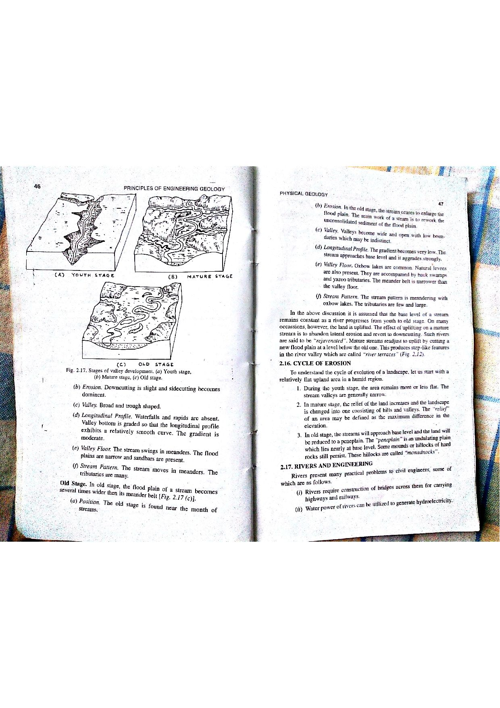

Q142: Evapotranspiration Dynamics: Energy Balance, Aerodynamics, Moisture, and Canopy Physiology
In hydrology, hydrogeology, and meteorology, Evapotranspiration (ET) represents the total water vapor flux returned to the atmosphere through the coupled processes of direct evaporation (from soil surfaces, water bodies, and intercepted canopy moisture) and plant transpiration (the biological vaporization of water extracted from the root zone and released through leaf stomata) (Chow et al., 1988; Allen et al., 1998; Bangar, p. 29).

Comprehensive Analysis of the Four Controlling Factors
As codified in the universal FAO-56 Penman-Monteith framework, evapotranspiration is governed by all four environmental factor suites:
- (i) Soil, Air and Water Temperature: Vaporization requires immense energy to overcome the latent heat of vaporization ($\lambda \approx 2.45\text{ MJ/kg}$ at $20^\circ\text{C}$). Elevated soil, air, and surface water temperatures provide thermal kinetic energy, accelerate molecular vaporization rates, and steepen the slope of the saturation vapor pressure curve ($\Delta = \frac{de_s}{dT}$), driving higher evaporation fluxes.
- (ii) Quantity of Air and Soil Moisture: Atmospheric moisture content dictates the Vapor Pressure Deficit ($VPD = e_s - e_a$). Dry air maintains a steep vapor gradient away from wet surfaces, maximizing ET. Simultaneously, root-zone soil moisture availability controls the capillary tension (matric suction) under which plant roots extract water; as soil dries past the threshold, stomata close and transpiration plummets.
- (iii) Wind and Atmospheric Pressure: Evaporating water molecules rapidly saturate the thin laminar boundary layer adjacent to the leaf and soil surfaces. Wind speed ($u_2$) creates turbulent eddies that continuously sweep away saturated air, replenishing it with drier ambient air. Atmospheric pressure ($P$) directly governs the psychrometric constant ($\gamma = \frac{c_p P}{\varepsilon \lambda}$); lower atmospheric pressure at higher altitudes lowers air density, facilitating faster molecular vapor diffusion.
- (iv) Nature and State of Vegetation: Vegetation controls transpiration through biological physiology: plant species, Rooting Depth, Leaf Area Index (LAI), canopy albedo ($\alpha$), surface roughness length ($z_{0m}$), and dynamic stomatal resistance ($r_s$). Actively growing, dense crops transpire several times more water than dormant, senescent, or sparsely vegetated scrublands.

The Physical Synthesis of Energy and Aerodynamics
The internationally standardized FAO-56 Penman-Monteith equation mathematically integrates all four factor groups into a unified physical model:
| Exam Question Factor | Corresponding Mathematical Term in Penman-Monteith | Physical Role in the Equation |
|---|---|---|
| (i) Temperatures | $T$ (Mean daily air temperature, $^\circ\text{C}$), $\Delta$ (Slope of saturation vapor pressure curve), $G$ (Soil heat flux) | Supplies the thermal energy required for latent heat of vaporization. |
| (ii) Moisture States | $(e_s - e_a)$ (Vapor pressure deficit, $\text{kPa}$), Soil water extraction threshold | Drives the vapor concentration gradient between the evaporating surface and atmosphere. |
| (iii) Wind & Pressure | $u_2$ (Wind speed at $2\text{ m}$ height, $\text{m/s}$), $\gamma$ (Psychrometric constant $\propto$ Atmospheric pressure $P$) | Governs turbulent boundary layer aerodynamic resistance and vapor transport. |
| (iv) Nature of Vegetation | $K_c$ (Crop coefficient), $r_s$ (Stomatal resistance), Aerodynamic canopy roughness | Modulates biological stomatal aperture and canopy boundary layer resistance ($ET_c = K_c \cdot ET_0$). |
A vital distinction in regional water budgeting separates atmospheric demand from terrestrial supply:
- Potential Evapotranspiration (PET): The maximum theoretical rate of evapotranspiration from an extensive green grass crop of uniform height ($0.12\text{ m}$), completely shading the ground, well-watered so that soil moisture is never limiting. Governed purely by atmospheric factors ((i), (ii), (iii)).
- Actual Evapotranspiration (AET): The actual volume of water vaporized under real-world conditions where soil moisture may be depleted and vegetation may be stressed:
$$\text{When Soil Moisture } \ge \text{Field Capacity: } \text{AET} = \text{PET}$$ $$\text{When Soil Moisture } \le \text{Wilting Point: } \text{AET} \approx 0$$
(i) Soil, air and water temperature
(ii) Quantity of air and soil moisture
(iii) Wind and atmospheric pressure
(iv) Nature and state of vegetation
Choose the correct set of answer from the following :
- (A) (i), (ii), (iii)
- (B) (i), (ii), (iv)
- (C) (i), (iii), (iv)
- (D) (i), (ii), (iii), (iv)
Option (A) omits parameter (iv) "Nature and state of vegetation". Transpiration constitutes up to $70\text{--}90\%$ of total terrestrial evapotranspiration. Leaf stomata, root architecture, canopy height, and vegetation phenological stage exert primary biological control over vapor release. Excluding vegetation is a fatal omission.
Option (B) omits parameter (iii) "Wind and atmospheric pressure". Without wind turbulence ($u_2$), evaporating water forms a stagnant saturated boundary layer over leaves and soil, choking off further vaporization. Atmospheric pressure directly dictates vapor diffusion rates and air density.
Option (C) omits parameter (ii) "Quantity of air and soil moisture". The vapor pressure deficit ($e_s - e_a$) is the fundamental driving force for vaporization. When air is $100\%$ saturated (relative humidity $100\%$), evaporation ceases completely. Furthermore, when soil dries to the permanent wilting point, root uptake halts.
In hydrological science and engineering geology (Bangar, p. 29; Chow et al., Ch. 3; FAO-56), evapotranspiration is governed by the simultaneous interaction of all four factors:
- (i) Temperature: Supplies the latent heat of vaporization.
- (ii) Moisture: Controls vapor deficit in the air and water supply in the root zone.
- (iii) Wind and Pressure: Powers turbulent aerodynamic mass transport away from surfaces.
- (iv) Vegetation: Governs biological stomatal conductance and canopy transpiration.
Therefore, Option (D) containing all four elements is the only complete and correct choice.
| Environmental Factor | Physical Parameter | Direct Effect on Evapotranspiration Rate | Limiting / Extremum Condition |
|---|---|---|---|
| Air & Soil Temperature | Thermal kinetic energy ($T, ^\circ\text{C}$) | Increases ET exponentially by increasing saturation vapor pressure ($e_s$). | At freezing ($T \le 0^\circ\text{C}$), sublimation replaces vaporization; stomata close. |
| Relative Humidity / Air Moisture | Ambient vapor pressure ($e_a, \text{kPa}$) | Decreases ET by narrowing the vapor pressure deficit ($VPD = e_s - e_a$). | At $RH = 100\%$ ($e_a = e_s$), net evaporation ceases entirely ($\text{ET} = 0$). |
| Wind Speed | Horizontal velocity ($u_2, \text{m/s}$) | Increases ET by sweeping away saturated laminar boundary layers. | Under extreme desiccating winds, high-stress stomatal closure occurs in plants. |
| Soil Moisture Availability | Volumetric water content ($\theta$) | Increases ET up to field capacity ($\theta_{\text{FC}}$). | At Permanent Wilting Point ($\theta_{\text{PWP}}$), capillary tension exceeds $-15\text{ bars}$; plant transpiration ceases. |
| Canopy Leaf Area Index (LAI) | Green leaf area per unit ground area | Increases ET by providing greater stomatal surface area. | Reaches asymptote when $\text{LAI} \ge 3 - 4$ (canopy achieves complete ground shading). |
On a hot summer afternoon in an agricultural river basin, the ambient air temperature is $T = 35.0^\circ\text{C}$. Using the standard Tetens / Murray equation for saturation vapor pressure over water: $$e_s(T) = 0.6108 \exp\left(\frac{17.27 T}{T + 237.3}\right) \quad (\text{in kPa})$$ Calculate the saturation vapor pressure ($e_s$) in $\text{kPa}$.
1. Compute the exponent argument: $$\frac{17.27 \times 35.0}{35.0 + 237.3} = \frac{604.45}{272.3} \approx 2.2198$$ 2. Compute $e_s$: $$e_s = 0.6108 \times \exp(2.2198) = 0.6108 \times 9.2055 \approx 5.623\text{ kPa}$$ The saturation vapor pressure at $35^\circ\text{C}$ is $5.62\text{ kPa}$.
At the temperature of $T = 35.0^\circ\text{C}$ ($e_s = 5.62\text{ kPa}$), a weather station hygrometer records a relative humidity of $RH = 40.0\%$. Calculate: (a) the actual vapor pressure ($e_a$), and (b) the Vapor Pressure Deficit ($VPD$).
1. Actual vapor pressure $e_a$: $$e_a = e_s \times \left(\frac{RH}{100\%}\right) = 5.62\text{ kPa} \times 0.40 = 2.248\text{ kPa}$$ 2. Vapor Pressure Deficit (VPD): $$VPD = e_s - e_a = 5.62 - 2.248 = 3.372\text{ kPa}$$ A large VPD of $3.37\text{ kPa}$ represents intense atmospheric evaporative demand.
A reference grass evapotranspiration rate of $ET_0 = 6.5\text{ mm/day}$ is calculated using the FAO-56 Penman-Monteith method. An irrigated sugarcane crop is in its mid-season peak growth stage with a crop coefficient $K_c = 1.25$. Calculate: (a) the daily crop water demand ($ET_c$) in $\text{mm/day}$, and (b) the water volume consumed by a $50.0\text{ hectare}$ sugarcane plantation in cubic meters per day ($\text{m}^3\text{/day}$).
1. Daily crop evapotranspiration $ET_c$: $$ET_c = K_c \times ET_0 = 1.25 \times 6.5\text{ mm/day} = 8.125\text{ mm/day}$$ 2. Water volume per day: $$1.0\text{ mm of depth} = 10\text{ m}^3\text{/hectare}$$ $$V_{\text{daily}} = 8.125\text{ mm/day} \times 50.0\text{ ha} \times 10\text{ m}^3/\text{mm}\cdot\text{ha} = 4062.5\text{ m}^3/\text{day}$$
The psychrometric constant is given by $\gamma = \frac{c_p P}{\varepsilon \lambda} \approx 0.000665 P$, where $P$ is atmospheric pressure in $\text{kPa}$. At sea level ($P_0 = 101.3\text{ kPa}$), $\gamma_0 = 0.0674\text{ kPa/}^\circ\text{C}$. For a high-altitude mining plateau in the Eastern Ghats at elevation $z = 1200\text{ m}$, atmospheric pressure drops to $P = 87.5\text{ kPa}$. Calculate: (a) the psychrometric constant $\gamma$ at $1200\text{ m}$, and (b) state the effect on potential evapotranspiration.
1. Calculate $\gamma$ at $1200\text{ m}$: $$\gamma = 0.000665 \times 87.5\text{ kPa} = 0.05819\text{ kPa/}^\circ\text{C}$$ 2. Effect on ET: Lower atmospheric pressure decreases $\gamma$ by $13.7\%$. In the Penman-Monteith denominator $(\Delta + \gamma(1 + 0.34u_2))$, a lower $\gamma$ value reduces the denominator, thereby increasing the calculated potential evapotranspiration rate at higher altitudes for equivalent solar radiation.
Above a vegetated watershed, the net available radiation is $R_n - G = 400.0\text{ W/m}^2$. Micrometeorological measurements determine that the Bowen Ratio (the ratio of sensible heat flux $H$ to latent heat flux $\lambda E$) is $\beta = 0.25$. Calculate the latent heat flux of evapotranspiration ($\lambda E$) in $\text{W/m}^2$.
1. Energy balance equation: $$R_n - G = H + \lambda E$$ Since $\beta = \frac{H}{\lambda E} \implies H = \beta \cdot \lambda E$: $$R_n - G = \beta \cdot \lambda E + \lambda E = \lambda E (1 + \beta)$$ 2. Solve for latent heat flux $\lambda E$: $$\lambda E = \frac{R_n - G}{1 + \beta} = \frac{400.0\text{ W/m}^2}{1 + 0.25} = \frac{400.0}{1.25} = 320.0\text{ W/m}^2$$ $80\%$ of the available net solar energy ($320\text{ W/m}^2$) is consumed directly by evapotranspiration.
Using the latent heat flux of $\lambda E = 320.0\text{ W/m}^2$ from Problem 5 sustained continuously over a 12-hour daylight period ($t = 43,200\text{ seconds}$), calculate the total equivalent depth of water evaporated in millimeters (latent heat of vaporization $\lambda = 2.45 \times 10^6\text{ J/kg}$, water density $\rho_w = 1000\text{ kg/m}^3$).
1. Total energy consumed per square meter: $$E_{\text{total}} = 320.0\text{ W/m}^2 \times 43,200\text{ s} = 13,824,000\text{ J/m}^2 = 13.824\text{ MJ/m}^2$$ 2. Mass of water evaporated: $$M_w = \frac{E_{\text{total}}}{\lambda} = \frac{13.824 \times 10^6\text{ J/m}^2}{2.45 \times 10^6\text{ J/kg}} = 5.6424\text{ kg/m}^2$$ 3. Convert to liquid water depth ($1\text{ kg/m}^2 = 1\text{ mm depth}$): $$\text{Depth} = 5.6424\text{ mm} \approx 5.64\text{ mm}$$
A loam soil has a Field Capacity $\theta_{\text{FC}} = 0.30$ and a Permanent Wilting Point $\theta_{\text{PWP}} = 0.12$. The readily available water threshold occurs at $\theta^* = 0.21$. When the soil moisture content drops to $\theta = 0.165$, the water stress coefficient is $K_s = \frac{\theta - \theta_{\text{PWP}}}{\theta^* - \theta_{\text{PWP}}}$. If the potential crop evapotranspiration is $ET_c = 6.0\text{ mm/day}$, calculate the actual evapotranspiration ($AET = K_s \cdot ET_c$).
1. Calculate water stress coefficient $K_s$: $$K_s = \frac{0.165 - 0.12}{0.21 - 0.12} = \frac{0.045}{0.090} = 0.50$$ 2. Calculate actual evapotranspiration $AET$: $$AET = K_s \times ET_c = 0.50 \times 6.0\text{ mm/day} = 3.0\text{ mm/day}$$ Due to soil moisture depletion, transpiration is halved ($50\%$ reduction).
In an arid basin where $(e_s - e_a) = 3.0\text{ kPa}$ and $T = 30^\circ\text{C}$, the aerodynamic vapor transfer term in the Penman equation is $E_a = 0.26 (1 + 0.54 u_2)(e_s - e_a)\text{ mm/day}$. Calculate the aerodynamic evaporation component for: (a) calm air with $u_2 = 0.5\text{ m/s}$, and (b) a strong gale with $u_2 = 6.0\text{ m/s}$.
1. Calm air ($u_2 = 0.5\text{ m/s}$): $$E_{a1} = 0.26 \times [1 + 0.54(0.5)] \times 3.0 = 0.26 \times [1 + 0.27] \times 3.0 = 0.26 \times 1.27 \times 3.0 = 0.9906\text{ mm/day}$$ 2. Strong gale ($u_2 = 6.0\text{ m/s}$): $$E_{a2} = 0.26 \times [1 + 0.54(6.0)] \times 3.0 = 0.26 \times [1 + 3.24] \times 3.0 = 0.26 \times 4.24 \times 3.0 = 3.3072\text{ mm/day}$$ $$\text{Ratio } \frac{E_{a2}}{E_{a1}} = \frac{3.3072}{0.9906} \approx 3.34$$ Increasing wind speed from $0.5$ to $6.0\text{ m/s}$ accelerates aerodynamic vapor removal by $334\%$.